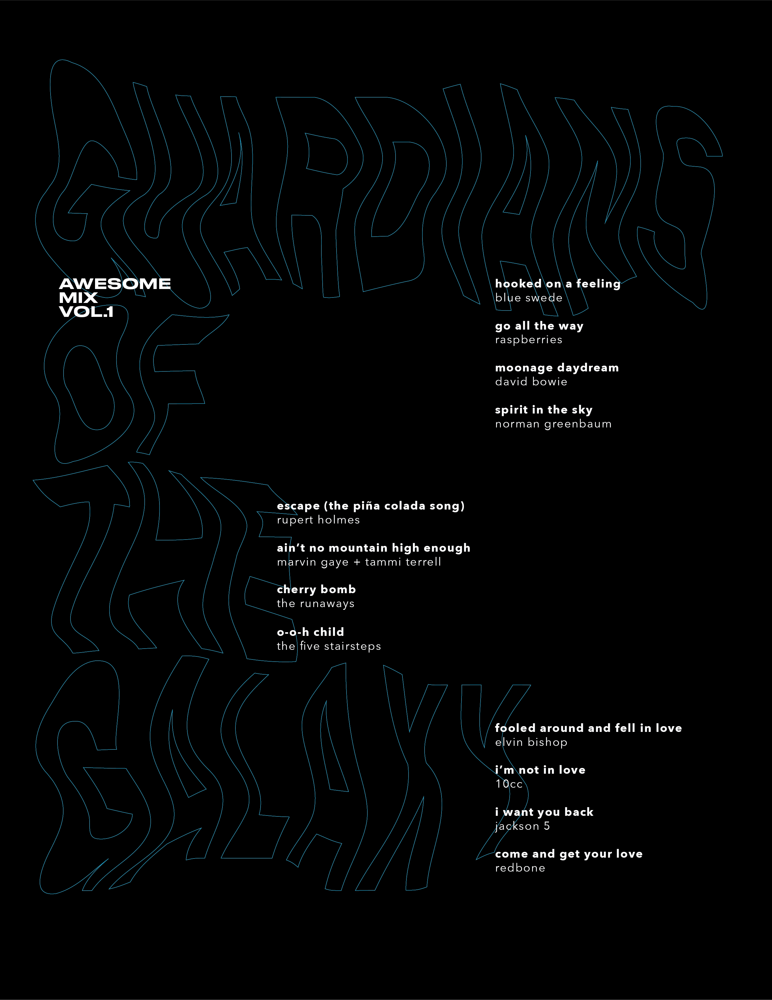

Skills
Graphic design, publication design
Tools
Adobe Illustrator, Adobe InDesign
Introduction
Designing for publication is aimed at making content easily accessible, readable, and enjoyable. Using principles of hierarchy, alignment, and page layout, can help manage large quantities of text. I had to select a body of text with certain recurring structures and design 4 different typographic solutions, each with its own challenges and restrictions. I have selected to design the tracklist of the Guardians of the Galaxy soundtrack using the font, Avenir.
Initial Concepts
Starting this project, I was excited to work with the different restrictions and find solutions that were outside the box. My goal was to experiment with how text could be manipulated and used in different ways.
Early on, when I chose to do the Guardians of the Galaxy soundtrack, I realized that I wanted to create layouts that would have a futuristic space feeling. Deciding to use a black background and white foreground elements would mimic and emphasize the space effect. Avenir's roundness, sharp edges, and straight stems make it a versatile typeface that works well in all weights and can be easily paired with various other fonts. I selected Druk Wide, a bold and rigid font, to use with Avenir.
Some Initial Sketches
Solution One
I selected a white background for this layout in order to show typography’s simple and raw state, without the effect of a black background. I wanted to use the list to create rhythm that would draw your attention in from the abundance of whitespace.
The placement of list items uses a strict alignment for a cohesive layout. It allows for a rhythm to be established from the repetition of similar elements.
High Fidelity Mockups
Final Layout
Solution Two
Initially, I began exploring the use of lines to create letters and using those resulting forms to create rhythm and dynamicity. However, I found the shape hard to work with other components, where layering could cause legibility issues.
Diverting from the previous methods, I moved towards cirles and how I could build relationships towards individual list items rather than a static axis. I quite liked this direction in that it could mimic the space-feel of the Guardians of the Galaxy movie.
The curved lines and paths of text uses both closure and continuity to create a visual illusion of circles expanding from the body copy and title anchored on the top left corner. The small circles uses similarity to cohere the design together.
High Fidelity Mockups

Final Layout
Solution Three
I experimented more with font sizes and layouts. Introducing the second typeface allowed for more room to experiment with. I decided to use a black background from here onward.
The background pattern creates rhythm by repetition while the contrast of the busy background and the empty box allows the text to stand out.
High Fidelity Mockups
Final Layout
Solution Four
For this solution, I wanted to warp/distort text. I first explored the ways I could do that and then build the layout around the shape created.
Using contrast between the rippled title and rigidly aligned body text, I could layer the components and keep them on a grid.
High Fidelity Mockups
Final Layout
Reflection
Overall, I would have liked to polish the designs more but am happy that I was able to practice ideating on different levels of constraints.